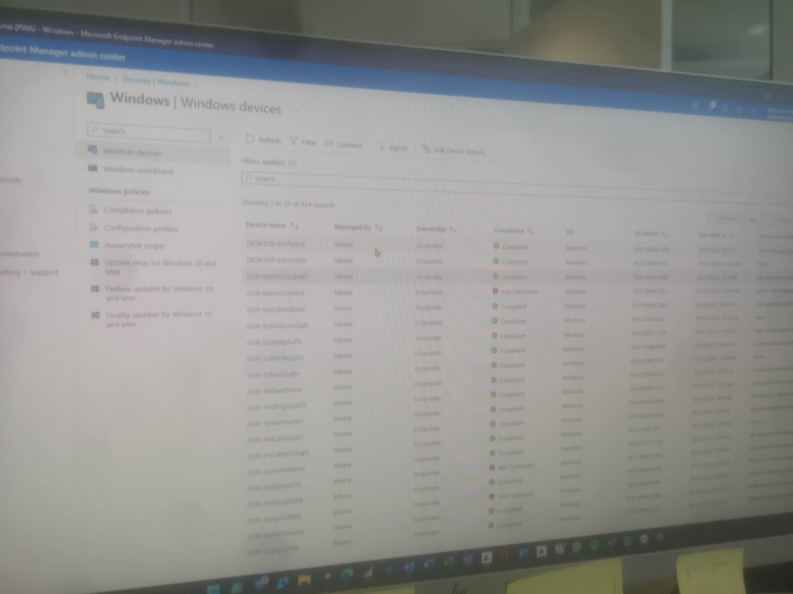

Dagverslag vrijdag
Vandaag was het de laatste dag. Toen ik arriveerde moest ik nog even wachten tot iedereen er was. Na een kwartiertje was iedereen er.
Automatisering
Ik begon de dag met mee te kijken bij Jordy, een collega. Jordy vertelde me dat hij dingen automatiseerde. Hij maakte de codes die voorwaarden hadden. Als het item aan de voorwaarde voldeed, zorgde dit voor een versnelling in het versturen van mails. Hij liet me een voorbeeld zien van mails. Hij had een aantal codes geschreven waardoor mensen vanaf hun werf makkelijk gegevens konden ingeven in excel. Via die gegevens werden automatisch mails verstuurd. Die code helpt de versnelling van mails sturen.
Laptops herstellen
Nadien mocht ik Michael helpen laptops te herstellen. Ik moest 2 laptops opnieuw instellen. Dat verliep zoals gewoonlijk vlot. Ook mocht ik docking stations uittesten die vermoedelijk kapot waren. Ik heb ook 1 laptop mogen instellen voor een nieuwe collega.
Gsm instellen
Na de middag kwam er iemand langs die een nieuwe gsm nodig had. Ik mocht hem helpen de stappen te doorlopen en de gsm in te stellen.
Programma's
Tegen het einde van de dag toonde Michael me een aantal programma's die zeer belangrijk zijn voor de IT-afdeling. Hij vertelde me zeer veel over Intune. Dat is een programma waarmee hij gebruikers kan aanmaken en verwijderen. Hij kan iedereen zijn machtigingen beheren. En via Intune kon hij ook collega's automatisch apps laten installeren. Dit wordt zeer veel gebruikt binnen het bedrijf, ze maken groepen aan per afdeling en sturen apps richting die groepen. Zoals bijvoorbeeld Bluebeam (een tekenprogramma), dit wordt gebruikt door architecten, en niet door het personeel van de boekhouding. Het kan ook gebruikt worden voor visuele servers aan te maken. Daarnaast dient het ook om het netwerk te beschermen. Ook vertelde hij me over Greenshot, dat is een programma dat wordt gebruikt om screenshots te maken. Het is zeer handig en een veel beter alternatief voor het welbekende knipprogramma.
